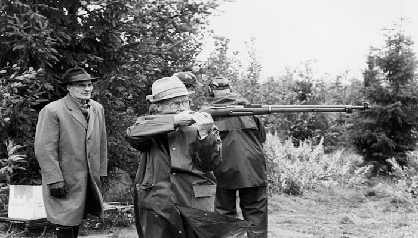
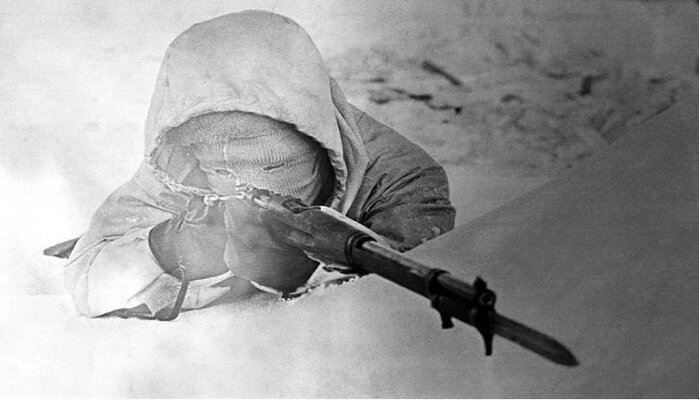
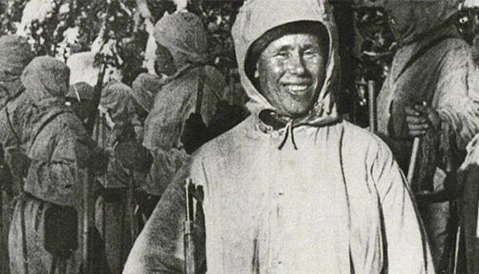

El fue un francotirador muy destacado eh importante para el frente Finlandes
durante la guerra del invierno en contra de la Guardia Roja dado que este era
el unico francotirardor sin pareja en todo el ejercito Finlandes dado a su epxeriencia
y su increible manejo del SAKO M/28-30 sin mira telescopica haciendolo mas indetectable
para el enemigo en cuestion probocando una mejora en sus abilidades como francotirador.
Fue el primer hombre en toda la historia hasta la fecha en abatir a mas de:
500 personas confirmadas y hay gente que especula que deben incluso mas de 600
pero eso se cree muy fantasioso para ser cierto pero eso no lo quita que no haya
hecho mas de 500 bajas confirmadas sin usar mira telescopica como francotiraador
La Muerte Blanca
8/11/2023